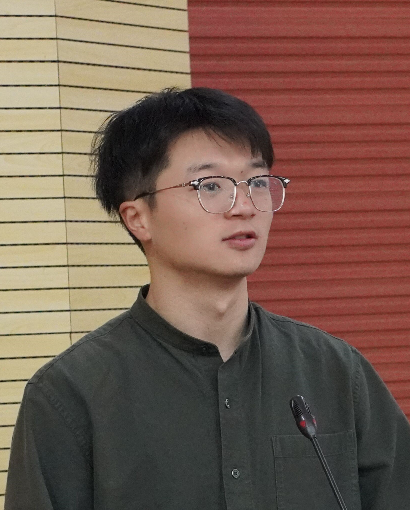

|  | Jiang He (何 江) |
Jiang He is currently working as a Postdoctoral Researcher in the Chair of Data Science in Earth Observation, Technical University of Munich, advised by Prof. Xiaoxiang Zhu. He received the bachelor's degree from Southwest Jiaotong University, China, and the Doctor of Engineering (Dr.-Ing.) degree in photogrammetry and remote sensing from Wuhan University, China, in 2024, where his research concentrated on "Research on spatial-spectral resolution enhancement of remote sensing images combining data and model-driven algorithms" under the supervision by Prof. Qiangqiang Yuan and Liangpei Zhang.
Jiang's research interests include hyperspectral image processing, deep learning, and data-model-driven algorithms. He has published 22 papers, including 17 SCI papers in INF-FUS, IEEE TNNLS, IEEE GRSM, JAG, IEEE TGRS and other TOP journals, and has presented his work at various international conferences including IGARSS. In addition to research, He also services as the reviewers of nine international journals, including INF-FUS, ISPRS, IEEE TGRS and so on. In 2023, He was invited as a Session Chair for "TH3.R2: Hyperspectral Imaging Denoising and Correction" in IGARSS 2023.
He is now working on hyperspectral image quality improvement, remote sensing sematic extraction, and data-model-driven theory, striving for Earth observation intelligent processing and understanding.
[17] SCI Q1 TOP, IF=: X. Jin, J. He*, Y. Xiao, Z. Lihe, J. Li, and Q. Yuan*, “VCDFormer: Investigating Cloud Detection Approaches in Sub-Second-Level Satellite Videos,” International Journal of Applied Earth Observation and Geoinformation (JAG), 2025. [Link]
[16] SCI Q1 TOP, IF=: Z. Lihe, Q. Yuan*, J. He*, X. Jin, Y. Xiao, Y. Chen, H. Shen, and L. Zhang, “Ada4DIR: An adaptive model-driven all-in-one image restoration network for remote sensing images,” Information Fusion (INFFUS), vol. 118, 102930, 2025. [Link]
[15] SCI Q1 TOP, IF=: X. Jin, J. He, Y. Xiao, Z. Lihe, X. Liao, J. Li, and Q. Yuan, “RFE-VCR: Reference-enhanced transformer for remote sensing video cloud removal,” ISPRS Journal of Photogrammetry and Remote Sensing (ISPRS), vol. 214, pp. 179-192, 2024. [Link]
[14] SCI Q1 TOP, IF=: Z. Lihe, J. He, Q. Yuan, X. Jin, Y. Xiao, and L. Zhang, “PhDnet: A novel physic-aware dehazing network for remote sensing images,” Information Fusion (INFFUS), vol. 106, 102277, 2024. [Link]
[13] SCI Q1 Top, IF=: Y. Li, J. Li*, J. He*, X. Liu, and Q. Yuan, “An optimization-driven network with knowledge prior injection for HSI denoising,” IEEE Transactions on Geoscience and Remote Sensing (IEEE TGRS), vol. 61, pp. 1-17, 2023. [Link]
[12] SCI Q1 Top, IF=: J. He, Q. Yuan, J. Li, Y. Xiao, and L. Zhang, “A self-supervised remote sensing image fusion framework with dual-stage self-learning and spectral super-resolution injection,” ISPRS Journal of Photogrammetry and Remote Sensing (ISPRS), vol. 204, pp. 131-144, 2023. [Link] [PDF] [Code] [BibTex]
[11] SCI Q1 Top, IF=: J. He, Q. Yuan, J. Li, Y. Xiao, D. Liu, H. Shen, and L. Zhang, “Spectral super-resolution meets deep learning: achievements and challenges,” Information Fusion (INFFUS), vol. 97, pp. 101812, 2023. [Link] [PDF] [Benchmark] [BibTex]
[10] SCI Q1 TOP, IF=: Y. Peng, J. He, Q. Yuan, S. Wang, X. Chu, and L. Zhang, “Automated glacier extraction using a Transformer based deep learning approach from multi-sensor remote sensing imagery,” ISPRS Journal of Photogrammetry and Remote Sensing (ISPRS), vol. 202, pp. 303–313, 2023. [Link]
[9] SCI Q1 Top, IF=: J. He, Q. Yuan, J. Li, and L. Zhang, “PoNet: A universal physical optimization-based spectral super-resolution network for arbitrary multispectral images,” Information Fusion (INFFUS), vol. 80, pp. 205-225, 2022. [Link] [PDF] [Dataset] [BibTex]
[8] SCI Q1 TOP, IF=: J. He, Q. Yuan, J. Li, L. Zhang, “A Knowledge Optimization-driven Network with Normalizer-Free Group ResNet Prior for Remote Sensing Image Pan-sharpening,” IEEE Transactions on Geoscience and Remote Sensing (IEEE TGRS), vol. 60, pp. 1-16, 2022, Art no. 5410716. [Link] [PDF] [BibTex]
[7] SCI Q1 Top, IF=: J. He, J. Li, Q. Yuan, H. Shen, and L. Zhang, “Spectral Response Function-Guided Deep Optimization-Driven Network for Spectral Super-Resolution,” IEEE Transactions on Neural Networks and Learning Systems (IEEE TNNLS), vol. 33, no. 9, pp. 4213-4227, 2022. [Link] [PDF] [Code] [Dataset] [BibTex]
[6] SCI Q1 TOP, IF=: J. He, Q. Yuan, J. Li, Y. Xiao, X. Liu, and Y. Zou, “DsTer: A dense spectral transformer for remote sensing spectral super-resolution,” International Journal of Applied Earth Observation and Geoinformation (JAG), vol. 109, pp. 102773, 2022. [Link] [PDF] [BibTex]
[5] SCI Q1 TOP, IF=, The only-student author, ESI Top 1%: L.-J. Deng, G. Vivone, M. E. Paoletti, G. Scarpa, J. He, Y. Zhang, J. Chanussot, and A. Plaza, “Machine Learning in Pansharpening: A Benchmark, From Shallow to Deep Networks,” IEEE Geoscience and Remote Sensing Magazine (IEEE GRSM), vol. 10, no. 3, pp. 279-315, 2022. [Link] [PDF] [Toolbox] [BibTex]
[4] SCI Q1 TOP, IF=, ESI Top 1%: Y. Xiao, Q. Yuan, K. Jiang, J. He, Y. Wang, and L. Zhang, “From degrade to upgrade: Learning a self-supervised degradation guided adaptive network for blind remote sensing image super-resolution,” Information Fusion (INFFUS), vol. 96, pp. 297–311, 2023. [Link]
[3] SCI Q4, IF=: 何江, 袁强强, 李杰, “面向多光谱卫星成像的广义光谱超分辨率,” 光子学报, vol. 52, no. 2, pp. 0210002, 2023. [Link] [PDF]
[2] EI, 中国卓越期刊: 张良培, 何江, 杨倩倩, 肖屹, 袁强强, “数据驱动的多源遥感信息融合研究进展,” 测绘学报, vol. 51, no. 7, pp. 1317-1337, 2022. [Link] [PDF] [BibTex]
[1] SCI Q2, IF=: J. He, J. Li, Q. Yuan, H. Li, and H. Shen, “Spatial-spectral Fusion in Different Swath Widths by a Recurrent Expanding Residual Convolutional Neural Network,” Remote Sensing (RS), vol. 11, no. 19, 2203, 2019. [Link] [PDF] [BibTex]
Conferences:
Membership:
Journal Reviewer: